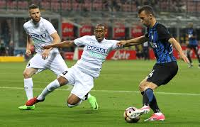

Uff... możemy dopisac kolejne 3 punkty
Inter Mediolan wraca do zwyciężania. Nerazzurri pokonali dzisiaj na własnym stadionie drużynę Udinese 1-0 po bramce z rzutu karnego Mauro Icardiego.
Inter Mediolan wraca do zwyciężania. Nerazzurri pokonali dzisiaj na własnym stadionie drużynę Udinese 1-0 po bramce z rzutu karnego Mauro Icardiego.
Jak już wiemy po dzisiejszym losowaniu par 1/16 finału Ligi Europy, Inter Mediolan zmierzy się z Rapidem Wiedeń 14 i 21 lutego 2019 roku.
Inter zaprzepaścił awans do 1/8 Ligi Mistrzów. Wynik w Barcelonie był korzystny, ale Nerazzurri zawiedli.